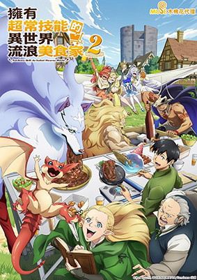

This is my favourite anime. I love the storytelling and the characters. I love how each scene and episode is so well thought out and how the story is so well paced. Some people might disagree with me, but I think this is a masterpiece of an anime. I love the art style and the music as well.

This was one of the first few animes that made a huge impact on me. A bit on the darker side, but the story is amazing and keeps you on your toes from start till the end. The anime was unforunately shortened and deviated from the manga, but I still love it. I would recommend people to watch this but be warned that this is not for the faint of heart.

A lighthearted anime. Easy to watch and keeps you in the good mood.